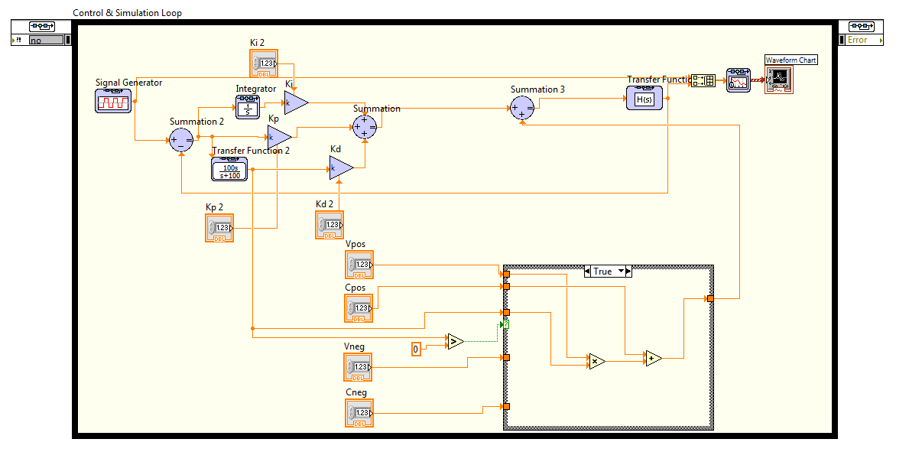
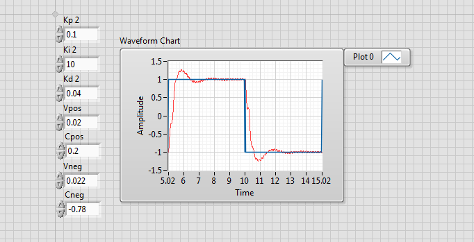
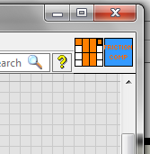
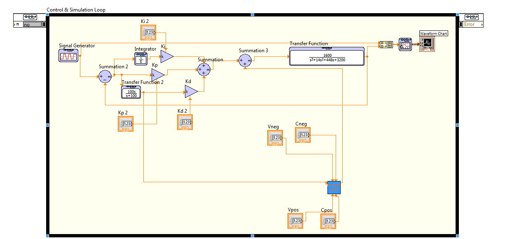
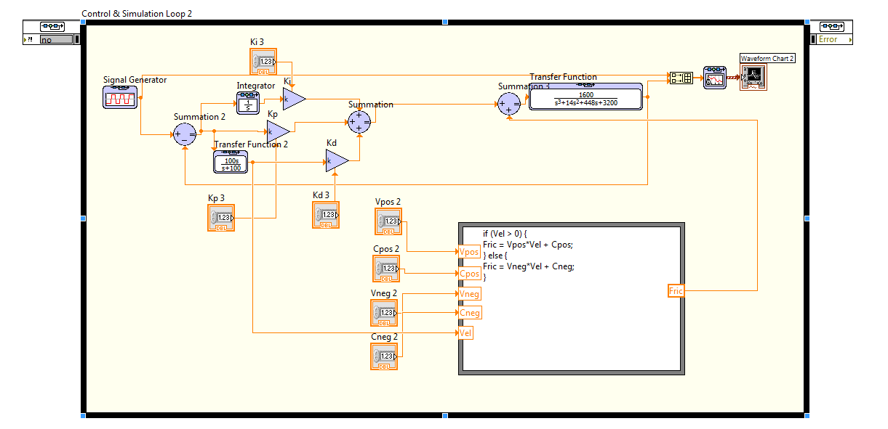

SE 423 Mechatronics
LabVIEW Assignment #4
This is an optional assignment if you would like to learn about how LABVIEW can be used like MATLAB/Simulink to simulate system equations.
For this exercise, I would like you to reproduce the two VIs shown in the pictures below. Both VIs perform the same task using different methods to implement an “if-else” condition, and one uses a SubVI. Again, for this exercise, start by creating a LabVIEW Project. Then, inside this project, add a single VI. We are using a project this time, so the SubVI you create will be saved in it. I will give some pointers and instructions below, but you will need to do some of your own hunting to find the necessary blocks and other parts of the program, and use LabVIEW help to figure out how to use/wire certain blocks. Many of the blocks I used below come from the “Control Design & Simulation → Simulation” section of LabVIEW.
Reproduce the below VI.
Instructions/tips:
You will notice that I am using a Case Structure in this VI. The case structure is implementing the following if statement:
if (velocity > 0) { FricComp = Vpos*velocity + Cpos; // viscous friction*velocity + static friction } else { FricComp = Vneg*velocity + Cneg; }
More steps continue below.


Make a simple Icon for your VI and connect the inputs and outputs to the pattern shown in the picture below. There is also another picture below of the simulation with the SubVI.


To add a variable to a formula node, right-click on an edge of the formula node and select “Add Input.” To add an output for the formula, right-click on an edge and select “Add Output.”
